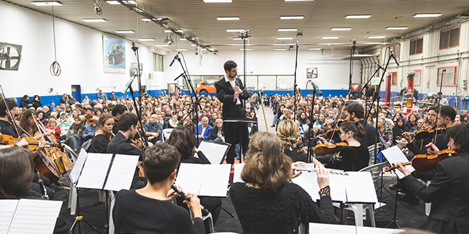
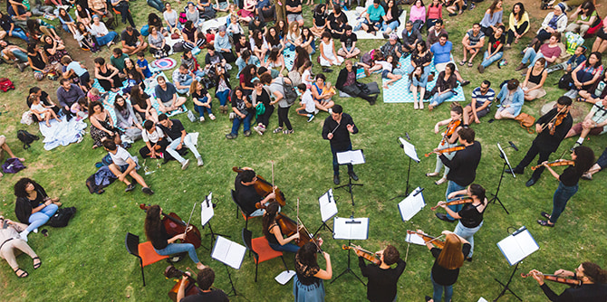
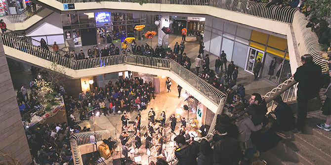

Photo: Yelena Kotani, courtesy of the Jerusalem Street Orchestra
The CulturEvents series was born of a desire to help cultural institutions and neighborhood community administrations in Jerusalem’s outlying neighborhoods to recover from the COVID-19 pandemic and reach new audiences that do not usually have access to such cultural events. The series will also help support Jerusalem-based artists who represent the cultural wealth of the capital, and will promote communal resilience.
The events in the series, which will be offered for free, will take place in a wide variety of the city’s neighborhoods and will mostly be held in public spaces. They will reach all of Jerusalem’s populations, in both East and West Jerusalem. They will be held in community centers in outlying neighborhoods and in well-known cultural institutions in the heart of the city, and will take place in ultra-Orthodox (Haredi), Arab, national religious, and secular communities.
Events will include open-air concerts performed by the Jerusalem Street Orchestra in San Simon Park, Hamesila Park, Khirbat Arza in Gilo, and various community gardens throughout the city. There will also be dance and music events for Arab residents of East Jerusalem; music events adapted for Haredi residents in the Neve Yaakov neighborhood; theatrical tours of the Jewish Quarter of the Old City for families; art events for families and adults at the Museum on the Seam; performances of
selichot (prayers of repentance before the High Holidays) for adults and Mizrahi music workshops for children at Ein Yael; dance and music events at the Bloomfield Science Museum; poetry slams at the Hamiffal (“The Factory”) art community; food exhibitions in the Musrara neighborhood; and a
Peter and the Wolf concert at the Israel Aquarium.
 Photo: Yelena Kotani, courtesy of the Jerusalem Street Orchestra
Many graduates of the Mandel Program for Leadership in Jewish Culture will participate in the cultural events being held throughout the city. They include:
- Yair Kochav, Yehudit Shlosberg-Yogev, and Gilad Vaknin in performances combing music and selichot at Ein Yael
- Amichai Chasson, Orian Shukrun, Neta Meisels, and Porat Salomon in a singing performance and installation at the Hamiffal (“The Factory”) art community
- Yael Gidanyan and Yair Harel in a show featuring lullabies at the Museum on the Seam
- Rabbanit Dr. Tamar Meir in a story-telling event about children’s literature at the Isaak Kaplan Old Yishuv Court Museum
- Neta Elkayam and Orian Shukrun in a musical performance at the Bloomfield Science Museum
- Avishay Wohl, Rachel Keshet, Sharon Mayevski, and Oded Mazor in a performance at the refurbished Montefiore Windmill in Yemin Moshe.
 Photo: Yelena Kotani, courtesy of the Jerusalem Street Orchestra
The CulturEvents series is being made possible thanks to a grant of one million shekels from the Jack, Joseph and Morton Mandel Foundation. “This series of events is the result of a collaboration between the Mandel Foundation and The Jerusalem Foundation,” says
Shai Doron, president of The Jerusalem Foundation. “This is a fruitful and close cooperation that developed during the peak of the pandemic last year, in response to the most immediate and vital needs of the city’s residents,” he continued. “Now the effort is dedicated to strengthening cultural and community life in Jerusalem.”
“CulturEvents will provide a solution for many families and populations in the city,” according to Ruth Diskin, director of the projects department at The Jerusalem Foundation and the person responsible for curating the content of the series, in collaboration with Ronen Izhaki, director of the Between Heaven and Earth cultural initiative and graduate of the Mandel Program for Leadership in Jewish Culture, along with other graduates of the program. “A diverse range of events has been curated, paying attention to the cultural needs of Jerusalem’s population groups, and with appropriate cultural sensitivity,” she said.
The CulturEvents series will take place during August through October 2021 and will continue during the summer of 2022.
{kind=link}
{kind=link}
{kind=link}